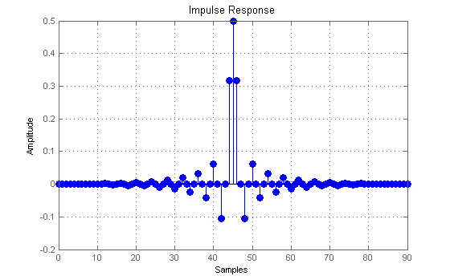
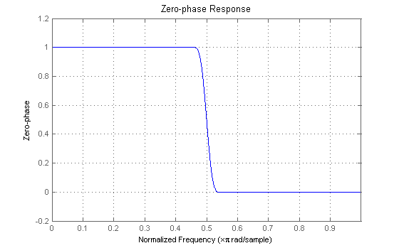
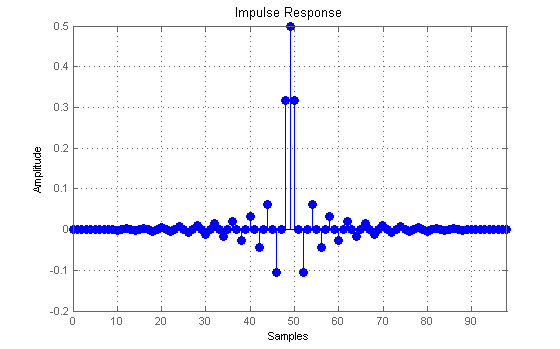
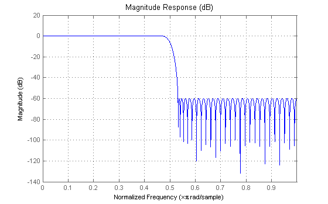
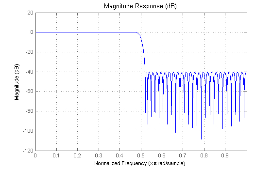
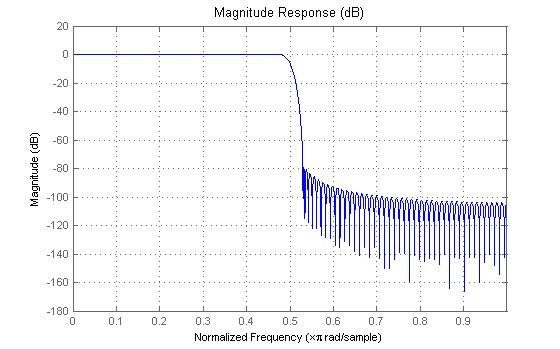
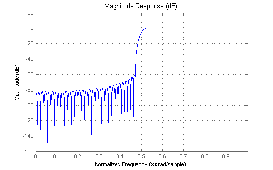
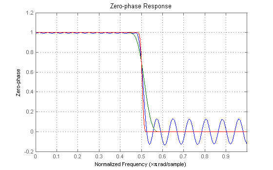
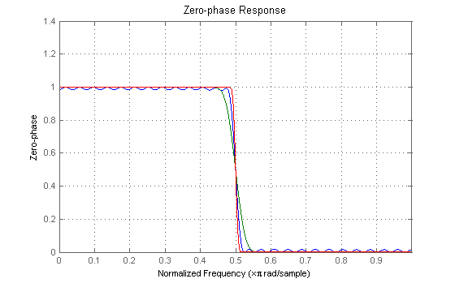

This demo showcases the FIRHALFBAND function that designs FIR halfband filters. Halfband filters are widely used in multirate signal processing applications when interpolating/decimating by a factor of two. Halfband filters are implemented efficiently in polyphase form, because approximately half of its coefficients are equal to zero.
Halfband filters have two important characteristics, the passband and stopband ripples must be the same, and the passband-edge and stopband-edge frequencies are equidistant from the halfband frequency pi/2.
FIRHALFBAND also supports designs of minimum-phase filters. Minimum-phase designs are useful for perfect reconstruction 2 channel FIR filter banks.
FIRHALFBAND allows for different ways of specifying design parameters in order to obtain halfband FIR filters. Two basic designs are available: equiripple designs and windowed-impulse-response designs. Equiripple designs can most easily be obtained from b = firhalfband(N,fp) where N is the filter order (which must be even and further satisfy the requirement that N/2 be odd) and fp is the passband-edge frequency which must be less than 1/2. For example
N = 90; % Filter order, N/2 is odd fp = 0.45; % Passband-edge, < 1/2 b = firhalfband(N,fp); % Results in an equiripple design % One can verify that the passband/stopband ripples are the same hfvt = fvtool(b, 'MagnitudeDisplay', 'Zero-phase'); set(hfvt, 'Color', [1 1 1])

% Impulse response showing every other coefficient equal to zero (except % for the middle one) set(hfvt, 'Analysis', 'impulse');
Windowed-impulse-response designs are obtained by simply specifying the order and a window of appropriate length. In this case, the passband-edge frequency cannot be specified, rather it is a result of both the order and the window specified.
N = 98; w = hamming(N+1); b = firhalfband(N,w); % Window design Hm = mfilt.firinterp(2,b); % Interpolation by two filter % One can verify that the passband/stopband ripples are the same set(hfvt, 'Filter', Hm, 'Analysis', 'magnitude');
% Impulse response still zero for every other coefficient set(hfvt, 'Analysis', 'impulse');
There are two degrees of freedom for equiripple designs of halfband filters. We have already shown design in which the order and the passband-edge frequency are specified. The passband/stopband ripple are always the same for halfband filters. The syntax shown so far does not provide control over this ripple. Alternatively, one can specify the order and the passband/stopband ripple (deviation from ideal values) by using the 'dev' string. For this case, the passband-/stopband-edge frequencies cannot be specified, rather they depend on both the order and ripples specified. For example,
N = 102; d = 0.001; % 60 dB of attenuation in the stopband b = firhalfband(N,d,'dev'); % Equiripple Hm = mfilt.firdecim(2,b); % Decimation by two filter % 60 dB is satisfied set(hfvt, 'Filter', Hm, 'Analysis', 'magnitude', 'MagnitudeDisplay', 'Magnitude (dB)');
% Passband-/stopband-edge frequencies are a result of design set(hfvt, 'MagnitudeDisplay', 'Zero-phase');
% Impulse response still zero for every other coefficient set(hfvt, 'Analysis', 'impulse');
A third way of designing equiripple halfband filters is by specifying both the passband-edge frequency and the passband/stopband ripple. The order of the filter cannot be specified in this case (because there are only two degrees of freedom), instead a filter of minimum-order that meets the design specifications is obtained:
fp = 0.48; d = 0.01; % 40 dB of attenuation in the stopband b = firhalfband('minorder',fp,d); % Equiripple % 40 dB is satisfied set(hfvt, 'Filter', dfilt.dffir(b), 'Analysis', 'magnitude', 'MagnitudeDisplay', 'Magnitude (dB)');
It is also possible to obtain minimum-order designs that meet both a passband-edge specification and a maximum passband/stopband ripple specification by using the Kaiser window. For example:
fp = 0.47; d = 0.0001; % 80 dB of attenuation in the stopband b = firhalfband('minorder',fp,d,'kaiser'); % Kaiser-window design % 80 dB is satisfied set(hfvt, 'Filter', dfilt.dffir(b));
By default, all designs are lowpass. However a highpass halfband filter can easily be obtained by specifying a trailing 'high' string.
fo = 0.46; % In this case this is stopband-edge frequency d = 0.001; % 60 dB of attenuation in the stopband b = firhalfband('minorder',fp,d,'kaiser','high'); % Kaiser-window design % Highpass filter set(hfvt, 'Filter', dfilt.dffir(b));
Minimum-phase designs are useful for 2 channel filter banks with perfect reconstruction composed solely of FIR filters. For this case, the minimum-phase filter is not in itself a halfband filter. Rather, it is a spectral factor of a halfband filter. The corresponding halfband filter can be obtained by convolving the impulse response with a reversed version of it (the maximum-phase spectral factor).
N = 51; % Minimum-phase halfband filters must be of odd order fp = 0.48; d = 0.001; % Stopband ripple (passband ripple is different in this case) b1 = firhalfband(N,fp,'minphase'); b2 = firhalfband(N,d,'dev','minphase'); b3 = firhalfband('minorder',fp,d,'minphase'); set(hfvt, 'Filter', [dfilt.dffir(b1), dfilt.dffir(b2), dfilt.dffir(b3)], ... 'MagnitudeDisplay', 'Zero-phase');
br1 = fliplr(b1); br2 = fliplr(b2); br3 = fliplr(b3); hhalf1 = dfilt.dffir(conv(b1,br1)); % Halfband filter with non-negative zerophase hhalf2 = dfilt.dffir(conv(b2,br2)); % Halfband filter with non-negative zerophase hhalf3 = dfilt.dffir(conv(b3,br3)); % Halfband filter with non-negative zerophase set(hfvt, 'Filter', [hhalf1, hhalf2, hhalf3]);